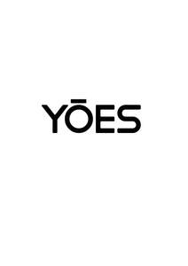

Trade Mark Journal No.2025/029 18 July 2025
UK00004226021 27 June 2025 (9,34)

- Class 9
- Chargers for mobile phones; Chargers for mobile telephones; Mobile phones; Devices for hands-free use of mobile phones; Straps for mobile phones; Mobile phone chargers; Batteries for use with mobile telecommunication devices; Straps for mobile telephones; Batteries for mobile phones; Mobile phone connectors for vehicles; Fast chargers for mobile devices; Software for mobile phones; Mobile telephones; Earphones for use with mobile telecommunication devices; Lanyards for mobile telephones; Auxiliary batteries for mobile phones; Battery chargers for mobile phones; Keyboards for mobile phones; Mobile phone straps; Mobile telephones for use in vehicles; Mobile telecommunications handsets; Downloadable mobile applications for use with wearable computer devices; Wireless headsets for mobile phones; Headsets for mobile telephones; Mobile radios; Displays for mobile phones; Mobile apps; Downloadable applications for use with mobile devices; Downloadable applications for mobile devices; Dashboard mounts for mobile phones; Electronic game software for mobile phones; Downloadable graphics for mobile phones; Cases for mobile phones; Downloadable ringtones for mobile phones; Display modules for mobile phones; Downloadable emoticons for mobile phones; Wireless portable printers for use with laptops and mobile devices; Downloadable software applications for mobile phones; Downloadable graphics for mobile telephones; Application software for mobile phones; Mobile computers; Downloadable emoticons for mobile telephones; Wireless headsets for use with mobile telephones; Auxiliary speakers for mobile phones; Mobile phone battery chargers; Leather cases for mobile phones; Mobile telephone batteries; Software applications for use with mobile devices; Software applications for mobile devices; Software and applications for mobile devices; Holders adapted for mobile telephones and smartphones; Mobile software; Electric mobile digital communication devices; Computer software for mobile phones; Protective cases for mobile phones; Mobile phone covers; Mobile phone cases; Braille mobile phones; Carriers adapted for mobile phones; Application software for mobile devices; Dashboard mats adapted for holding mobile telephones and smartphones; Holders adapted for mobile phones; Mobile phone speakers; Dustproof plugs for jacks of mobile phones; Screen protectors for mobile telephones; Carrying cases for mobile phones; Docking stations for mobile phones; Computer application software for mobile phones; Downloadable mobile applications; Cases adapted for mobile phones; Computer software for use on handheld mobile digital electronic devices and other consumer electronics; Downloadable ring tones for mobile phones; Stands adapted for mobile phones; Computer application software for mobile telephones; Ring holders for mobile telephones; Mobile telecommunications apparatus; Mobile telephone covers; Computer game software for use on mobile and cellular phones; Mobile telecommunication apparatus; Carrying cases for mobile telephones; Computer software for mobile applications that enable interaction and interface between vehicles and mobile devices; Downloadable ring tones for mobile telephones; Mobile telephone cases; Remote controls for mobile electronic devices; Educational mobile applications; Mobile phone docking stations; Chargers for smartphones; Selfie sticks used as smartphone accessories; Augmented reality software for use in mobile devices; Mobile phone screen protectors; Mobile phone ring holders; Mobile or portable fax machines; Flip covers for mobile phones; Computer game software for use on mobile devices; Downloadable mobile coupons; Downloadable mobile applications for booking taxis; Carrying cases for mobile computers; Mobile application software; Mobile app's; Mobile communication terminals; Software for mobile device management; Mobile device management software; Mobile applications for booking taxis; Mobile phone ring stands; Local mobile telephone systems; Telecommunications apparatus for use with mobile networks; Mobile data apparatus; Mobile data receivers.
- Class 34
- Tobacco; Shisha tobacco; Hookah tobacco; Tobacco tins; Tobacco jars; Tobacco products; Tobacco substitutes; Tobacco substitute; Cigarettes, cigars, cigarillos and other ready-for-use smoking articles; Inhalers for use as an alternative to tobacco cigarettes; Tobacco and tobacco products (including substitutes); Tobacco storage tins; Tobacco free cigarettes, other than for medical purposes; Devices for extinguishing heated cigarettes, cigars and heated tobacco sticks; Mouthpieces for cigarettes; Devices for extinguishing heated cigarettes and cigars as well as heated tobacco sticks; Tobacco free oral nicotine pouches [not for medical use]; Smoking sets for electronic cigarettes; Herbs for smoking; Ashtrays for smokers; Cigarette lighters; Electric cigarettes [electronic cigarettes]; Lighters for smokers [cigarette lighters] [not for automobiles]; Flavorings, for use in electronic cigarettes; Flavourings for use in electronic cigarettes; Cigarettes containing tobacco substitutes, not for medical purposes; Lighters for smokers; Liquid nicotine solutions for use in electronic cigarettes; Liquid nicotine solutions for electronic cigarettes; Electronic smoking pipes; Electronic cigarette cartomizers; Cigarette tobacco; Smoking tobacco; Mentholated tobacco; Menthol pipe tobacco; Tobacco and tobacco substitutes; Snus with tobacco; Chewing tobacco; Hand-rolling tobacco; Pipe tobacco; Snuff with tobacco; Smokeless tobacco; Roll-your-own tobacco; Flavored tobacco; Tobacco spittoons; Flavourings for tobacco; Pipes for smoking mentholated tobacco substitutes; Japanese shredded tobacco (kizami tobacco); Tobacco pipes; Pipes (Tobacco -); Leaf tobacco; Tobacco tar for use in electronic cigarettes; Menthol cigarettes; Snus without tobacco; Tea for smoking as a tobacco substitute; Tobacco powder; Tobacco pipe cleaners; Cigars for use as an alternative to tobacco cigarettes; Humidifiers for tobacco; Pouches for tobacco; Tobacco pouches; Pouches (Tobacco -); Hemp for smoking; Tobacco filters; Tobacco pipe scrapers; Tobacco containers and humidors; Cigarettes; Snuff without tobacco; Manufactured tobacco; Spittoons for tobacco users; Tobacco cases; Rolling tobacco; Raw tobacco; Herbal molasses [tobacco substitutes]; Cigarettes containing tobacco substitutes; Articles for use with tobacco; Asian long tobacco pipes (kiseru); Asian long tobacco pipes [kiseru]; Kiseru [long Japanese tobacco pipes]; Pipe cleaners for tobacco pipes; Smokeless cigarette vaporizer pipes; Pipe racks for tobacco pipes; Filters for tobacco products; Absorbent paper for tobacco pipes; Asian long tobacco pipe sheaths; Loose, rolling and pipe tobacco; Absorbent paper for tobacco; Smoking pipe cleaners; Cigars; Smoking pipes; Tobacco products for the purpose of being heated; Tobacco pipes of precious metal; Tobacco, raw or manufactured; Cigar lighters; Tips of yellow amber for cigar and cigarette holders; Yellow amber (Tips of -) for cigar and cigarette holders; Cigarette cutters; Cigarette paper; Mentholated pipes; Cigarette tubes; Smoking urns; Tipping paper for cigarettes; Cigarette packets; Tobacco pipes, not of precious metal; Cigar tubes; Cigarette boxes; Smokers (Lighters for -); Tobacco, whether manufactured or unmanufactured; Cigar clippers; Cigarillos; Firestones for lighters for smokers; Cigarette papers; Cigar filters; Cigar cutters; Cutters (Cigar -); Cigarette holders; Cigar pouches; Snus.
YOES LIMITED